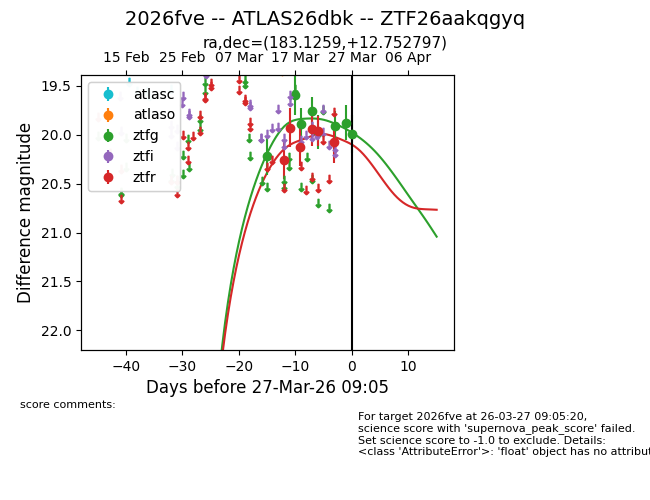
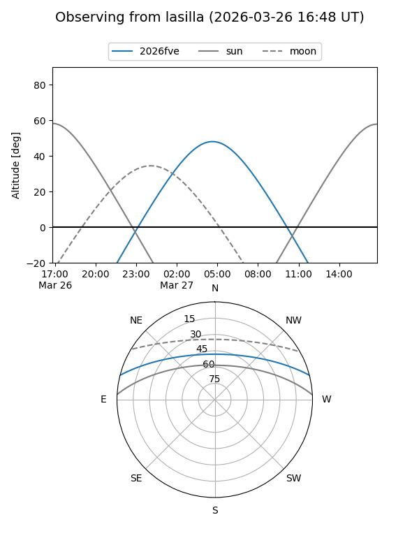
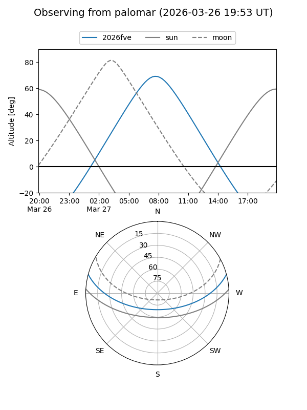
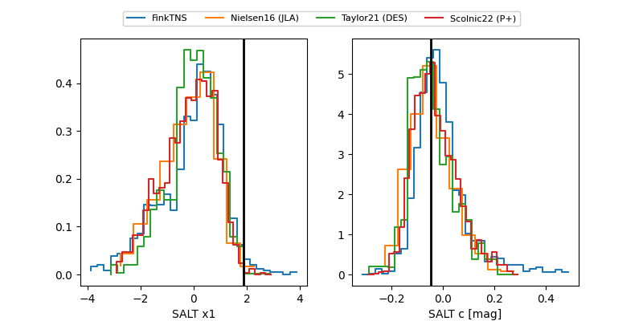

2026fve
Target 2026fve at 2026-03-27 09:08
Aliases and brokers:
FINK: link
Lasair: link
ALeRCE: link
TNS: link
YSE: link
alt names
ZTF26aakqgyq (ztf,fink_ztf)
2026fve (tns,yse)
ATLAS26dbk (atlas)
Coordinates:
equatorial (ra, dec) = 183.1259,+12.75280
equatorial (HMS+DMS) = 12:12:30.23,+12:45:10.07
galactic (l, b) = (268.6479,+72.97831)
Flags:
Photometry:
last ztfg=19.99, ztfr=20.08
8 ztfg, 6 ztfr detections
Lightcurve

Visibility


Additional plots
